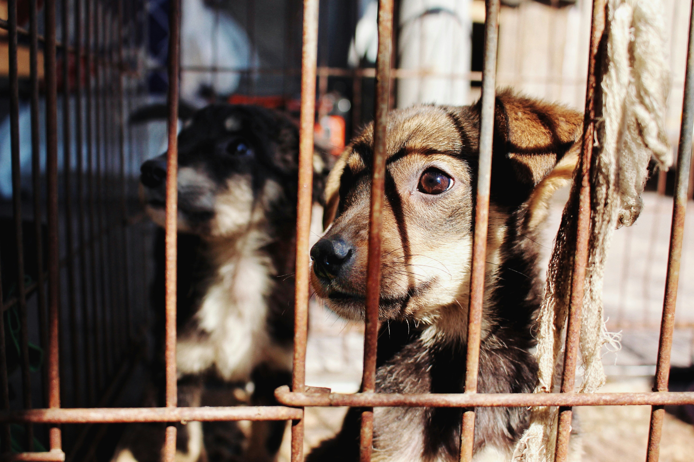
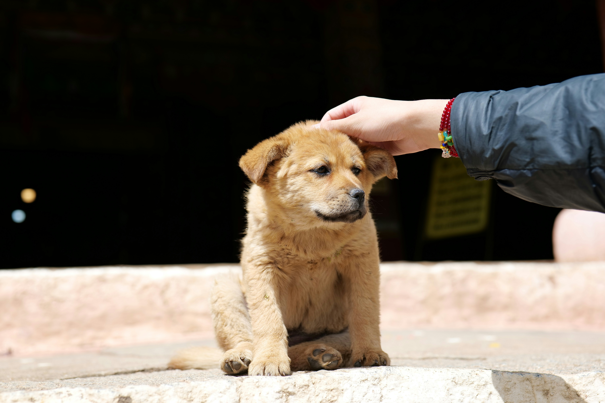
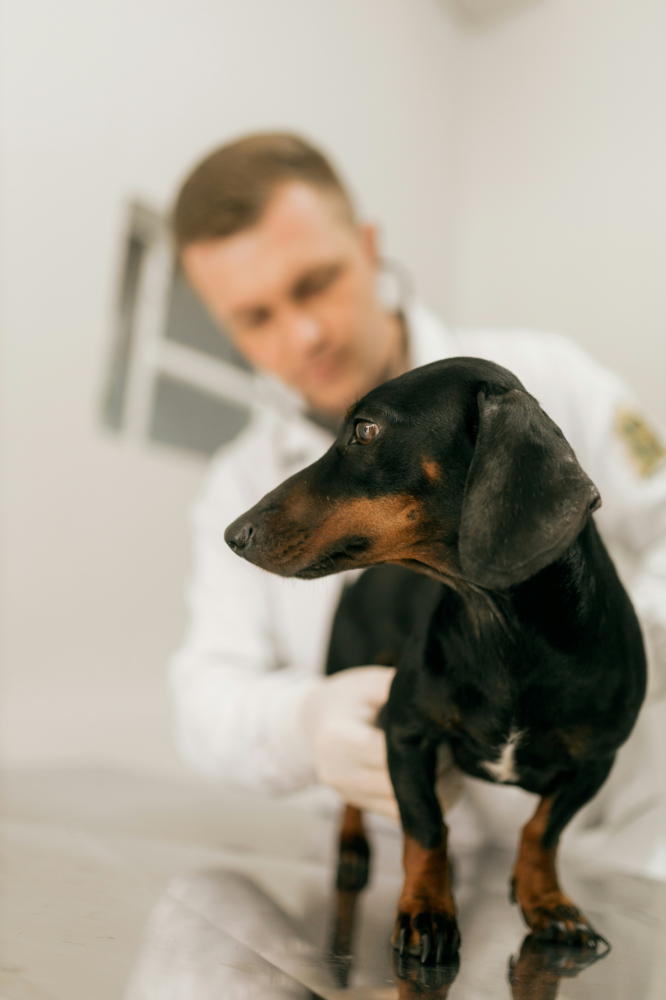

Maria
Carinhosa · 8 meses
 PetLife
PetLife
Adote com responsabilidade e transforme a vida de um animal — e a sua também.


 Uma nova amizade começa aqui
Uma nova amizade começa aqui
Conheça os animais disponíveis e escolha aquele que combina com você.
Informe seus dados e envie sua solicitação de adoção.
Nossa equipe analisará sua solicitação e entrará em contato com você.
Com a adoção aprovada, prepare seu lar para receber muito amor!
Veja histórias de carinho entre animais e suas novas famílias.

"Adotar foi uma das melhores decisões da minha vida! Hoje tenho um companheiro incrível."

"O processo foi simples e cheio de carinho. Minha cachorrinha trouxe muita alegria para nossa casa."

"Encontrei na adoção meu melhor amigo. Foi uma experiência maravilhosa do início ao fim!"
.jpg)
"Adotar o Tata foi uma das melhores decisões da minha vida! Ele chegou trazendo muita alegria para nossa casa."

"Eu sempre quis ter um cachorro, mas não sabia por onde começar.Recomendo muito a adoção."

"A experiência de adoção foi incrível! Recebi todas as orientações necessárias e tive apoio em cada etapa.nha casa de amor. "
Conheça a história de Eduardo e Zulu: uma adoção que se transformou em 15 anos de amizade e companheirismo.
Zulu foi adotado por Eduardo por meio de uma ONG. Quinze anos depois, a história dos dois mostra como a adoção responsável pode criar vínculos duradouros.
Assistir no YouTubeEncontrou um animal abandonado, perdido ou em situação de risco? Sua atitude pode fazer toda a diferença. Ajude-nos a oferecer proteção, cuidado e um novo lar.
Consulte abrigos e organizações de proteção animal em Maceió e região.

Entenda como a adoção responsável transforma histórias.
Ler mais

Você escolhe um animal, preenche o formulário de adoção e aguarda o contato da nossa equipe.
Entre em contato com nossa equipe para conhecer as condições de adoção.
É importante ter responsabilidade, tempo e condições para cuidar do animal.
Sim! Desde que você tenha condições de oferecer os cuidados necessários.
As informações sobre vacinação e saúde são apresentadas durante o processo de adoção.
Você pode ajudar divulgando nosso trabalho, realizando doações ou sendo voluntário.

Ainda tem dúvidas?